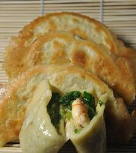

通信1903 201916180316 赵子龙（前一个同学：201916180315 李家辉 ，后一个同学201916180317 郑杰仁）
我的名字是赵子龙，我来自湖南岳阳，我的微信是：

饺子
我最喜爱的食物是饺子，饺子是中国传统食物，以面皮包馅、形如半月或元宝形，包好的饺子可以拿来制作成蒸饺、煎饺或汤饺。
饺子起源于东汉时期，为医圣张仲景首创。民间有“好吃不过饺子”的俗语。每逢新春佳节，饺子更成为一种应时不可缺少的佳肴。
饺皮也可用烫面、油酥面、鸡蛋步或米粉制作；馅心可荤可素、可甜可咸；制熟方法也可用蒸、烙、煎、炸等。荤馅有三鲜、虾仁、蟹黄、海参、鱼肉、鸡肉、猪肉、牛肉、羊肉等，素馅又分为什锦素馅、普通素馅之类。饺子的特点是皮薄馅嫩，味道鲜美，形状独特，饺子的制作原料营养素种类齐全，蒸煮法保证营养较少流失，并且符合中国色香味饮食文化的内涵。
中国各地饺子的名品甚多，如广东用澄粉做的虾饺、上海的锅贴饺、扬州的蟹黄蒸饺、山东的高汤小饺、沈阳的老边饺子、四川的钟水饺等，都是受人欢迎的品种。西安还创制出饺子宴，用数十种形状、馅心各异的饺子组成宴席待客。
饺子现在已经成为了北方人不可或缺的过年食品。在包饺子时，人们常常将金如意、红糖、花生、枣和栗子等包进馅里。吃到如意、吃到红糖的人，来年的日子更甜美，吃到花生的人将健康长寿，吃到枣和栗子的人将早生贵子。
